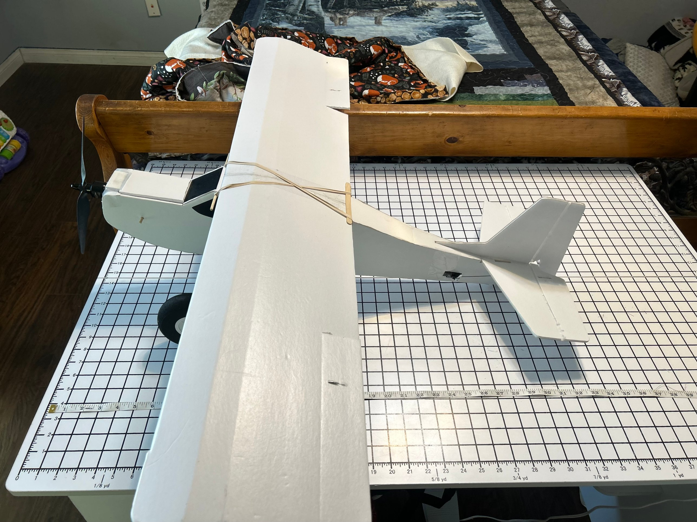
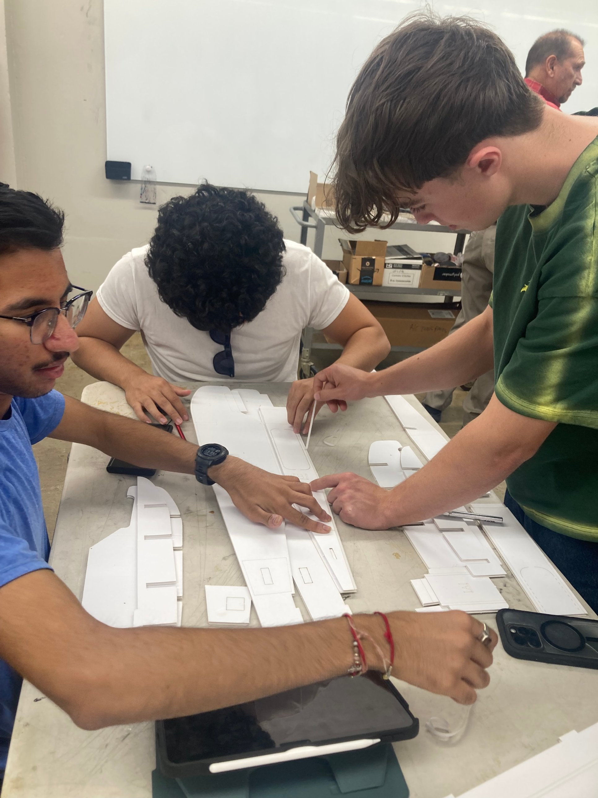
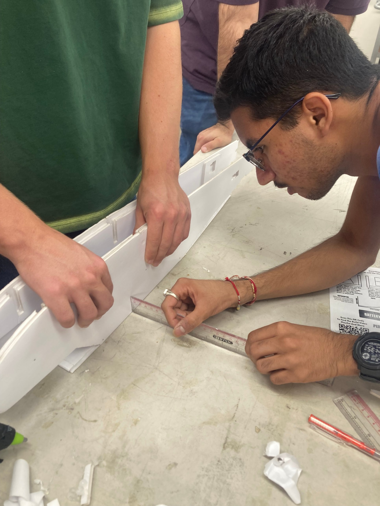
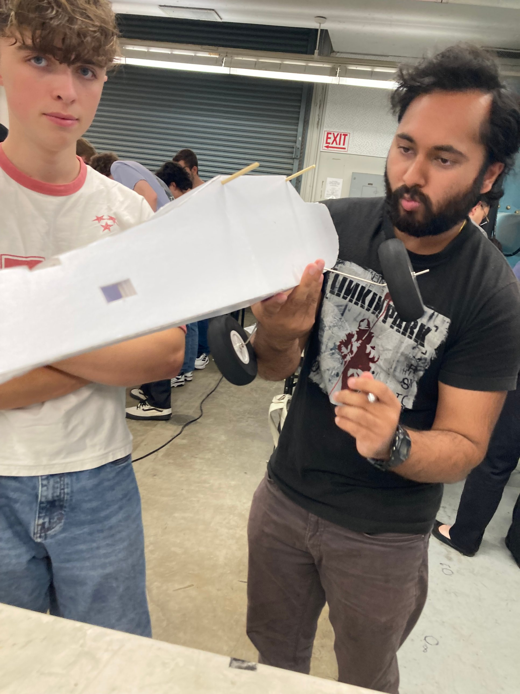
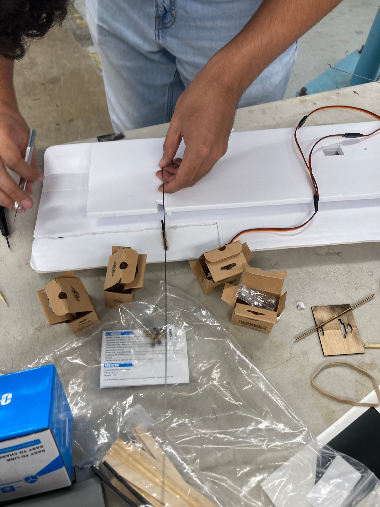
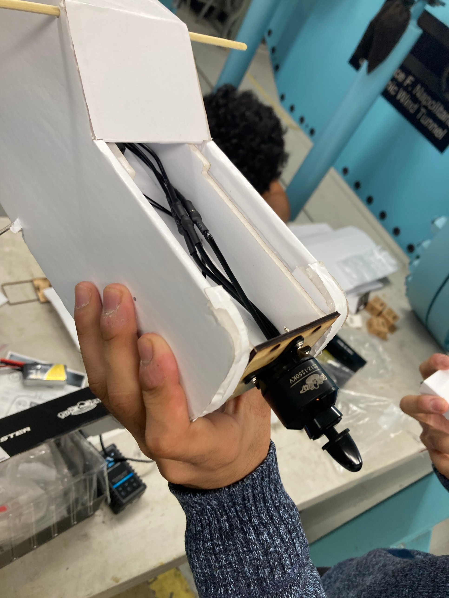
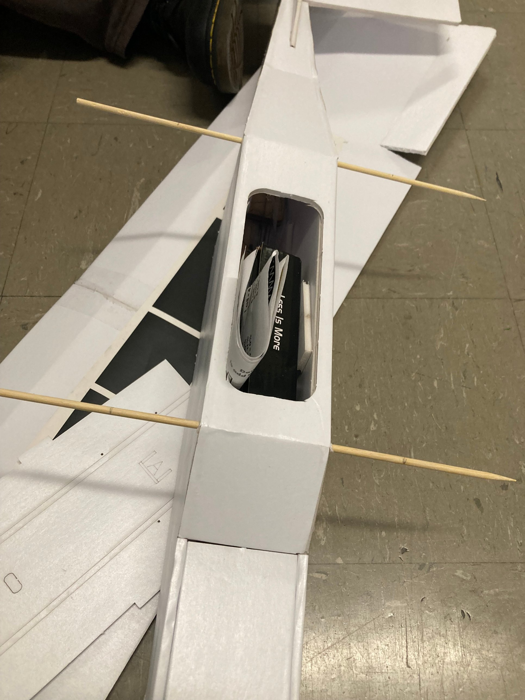
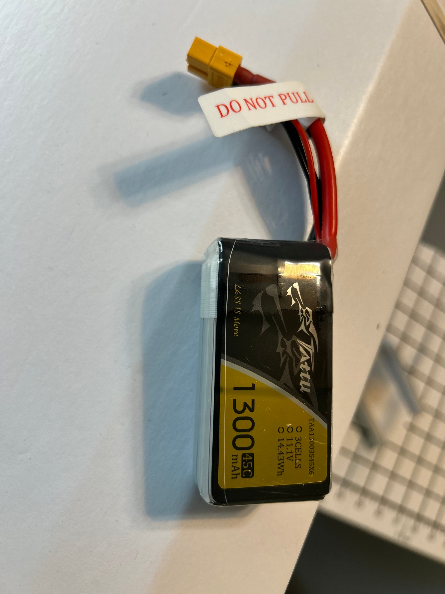
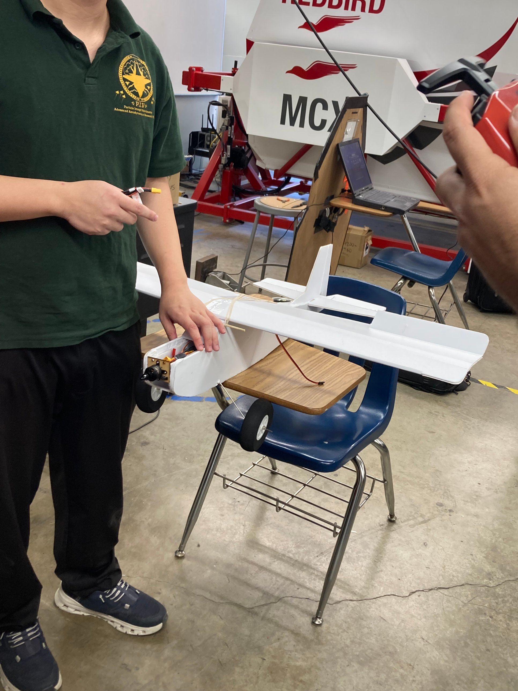
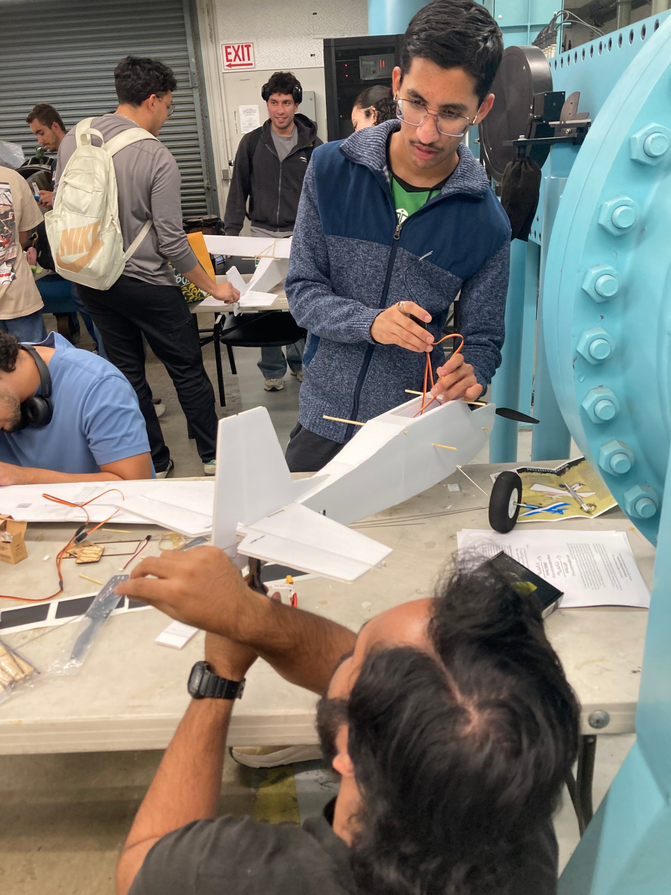

- Where
- ARO 1011L, Cal Poly Pomona
- Team
- 5, team lead
- Aircraft
- FT Tutor MKR2 kit
- Testing
- Thrust bench + 200 ft flight course

This project paired a hands-on build with a flight-mechanics characterization of the finished aircraft. As team lead, I oversaw construction and final assembly of a foam R/C trainer built from a kit, then ran the completed airplane through two complementary tests: a ground bench calibration of the motor-propeller system's static thrust and electrical power across throttle settings, and a timed free-flight pass over a measured 200 ft course. Because actual in-flight lift and thrust can't be measured directly with hobby-level instrumentation, both were backed out using the standard steady-level-flight assumption: in unaccelerated, wings-level cruise, lift equals weight and thrust equals drag.
Build and assembly
The airframe came from an FT Tutor MKR2 kit. The team split into sub-groups, one on the wing and one on the fuselage and tail, building to the kit's reference plans while I coordinated final assembly and fit-up. The first session covered the foam shell: fuselage, tail, and wing. The second covered the inner electronics and landing gear, with two people wiring the motor and propeller, two on the wing servos, and the last person on the landing gear. Pairing the radio to the aircraft took longer than expected, since the controller kept trying to bind to other kit planes being built in the same room; moving to an open corner of the shop solved it. On first power-up, the rudder and elevator channels came back reversed, which we corrected in the transmitter's control settings rather than rewiring the servos.



Propulsion and wiring
Power comes from a single brushless motor and propeller on a plywood firewall at the nose, fed by a 3-cell lithium-polymer battery (Tattu 1300 mAh, 45C discharge, 11.1 V nominal, 14.43 Wh). Servo and motor leads route aft through the wing root and fuselage boom to the receiver and electronic speed controller in the tail section. Hobby blades, wire cutters, and hot glue were the build's main tools; uneven glue joints and a motor mount that needed re-shimming for alignment were two of the build's recurring snags.




Wing reference geometry
The wing's reference area and aspect ratio were needed to reduce the flight data to non-dimensional lift and drag coefficients later. With a measured span of b = 41.5 in (3.458 ft) and a constant chord of c = 8.5 in (0.708 ft), the trapezoidal planform formula gives a reference area S = (b/2)·(croot + ctip) ≈ 2.45 ft² and an aspect ratio AR = b²/S ≈ 4.88. Aircraft weight, measured on a scale the morning of the test, was 720 g (1.587 lbf).
Static thrust and power bench calibration
Before flying, the completed airframe was mounted to a thrust stand and run at four throttle settings in 25% increments, with a note-taker, a controller operator, a data collector, and a dedicated person holding the airplane steady for each reading. At each setting the stand reported static thrust directly, while DC bus voltage and motor current were logged to compute electrical power; shaft power was then estimated from electrical power using an assumed propeller efficiency of η = 0.85.
| Throttle | Thrust (lbf) | VDC (V) | Imotor (A) | Pelec (W) | Pshaft (W) |
|---|---|---|---|---|---|
| 25% | 0.287 | 9.25 | 4.00 | 37.00 | 31.45 |
| 50% | 0.606 | 9.71 | 8.50 | 82.50 | 70.13 |
| 75% | 1.157 | 7.50 | 14.00 | 105.00 | 89.25 |
| 100% | 1.984 | 7.50 | 18.00 | 135.00 | 114.75 |
Thrust tracked power roughly linearly up to about 80 W, then climbed more steeply above it. That kink lines up with a drop in bus voltage between the 50% and 75–100% settings, consistent with the battery sagging under higher current draw rather than with any change in propeller behavior.


Flight test and results
The flight course was two cones set 200 ft apart on an open field. Roles were split across the team: a pilot, a stopwatch operator, a distance-marker observer at the far cone, and a data recorder, with one person filming. After a hand launch at partial throttle, the pilot flew 7 laps of the course at a steady cruise setting, averaging Vavg = 26.652 ft/s over an average lap time of 7.504 s, at an estimated throttle setting of about 65%.
Using the L = W and T = D steady-flight assumption, aircraft weight gives lift directly, and interpolated shaft power divided by flight velocity (D = Pshaft/Vavg) gives drag. Dynamic pressure from local air density and Vavg then converts both to coefficients.
| Weight, W | 1.587 lbf |
|---|---|
| Thrust (bench-inferred) | 1.009 lbf |
| Drag (calculated) | 0.908 lbf |
| Average propulsive power | ≈90 W |
| CL | 0.865 |
| CD | 0.449 |
| L/D (CL/CD) | 1.93 |
| Max thrust/weight | 1.250 |
The measured thrust exceeded the calculated drag by 0.101 lbf, an 11.1% deviation against the ±10% tolerance the lab set for the T = D assumption, so the steady-flight condition didn't quite hold within budget. Unmodeled climb or acceleration during the pass is the most likely explanation. The resulting lift-to-drag ratio of 1.93 is low next to a clean, efficient airframe, but is in line with what's expected of a kit foam trainer at the low Reynolds numbers this aircraft flies at.
Sources of error and takeaways
The flight-test numbers carry several known sources of error: stopwatch-timed laps with roughly 0.1–0.2 s of reaction-time uncertainty, ground wind speed used as a stand-in for true airspeed, an assumed-identical flight path across all 7 laps, a fixed propeller efficiency of 0.85 rather than one measured for this specific propeller, and the gap between this finite, 3D wing and the 2D airfoil theory the coefficients are built on. On the build side, the hot glue joints, an uneven motor mount, and a loose horizontal stabilizer were the main sources of build variance. Flying multiple passes in alternating directions and averaging the resulting velocities, using a dedicated timing device, and recalibrating the thrust bench at the flight voltage would all tighten the result in a repeat of this test. The airframe itself was retired after testing and its electronics were salvaged for the team's next build.
- Kit assembly and foam fabrication
- RC electronics integration
- Static thrust and power bench calibration
- Flight-test data reduction
- Lift/drag coefficient analysis
- Team lead, build coordination